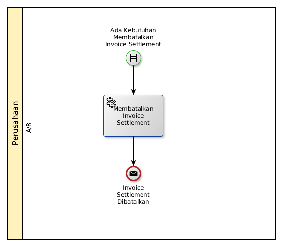
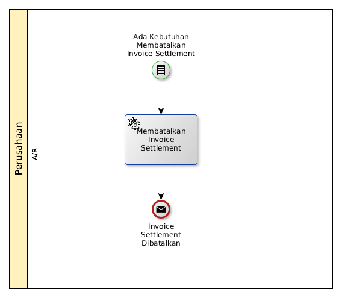

Membatalkan Settlement Customer Invoice Dengan Supplier Invoice
A. INPUT
Condition: Ada kebutuhan untuk membatalkan invoice settlement
B. ROLE YANG TERLIBAT
- A/R
C. INSTRUKSI KERJA

D. OUTPUT
Message: Invoice Settlement dibatalkan
Condition: Ada kebutuhan untuk membatalkan invoice settlement

Message: Invoice Settlement dibatalkan